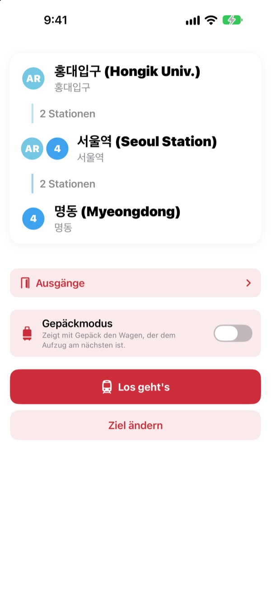
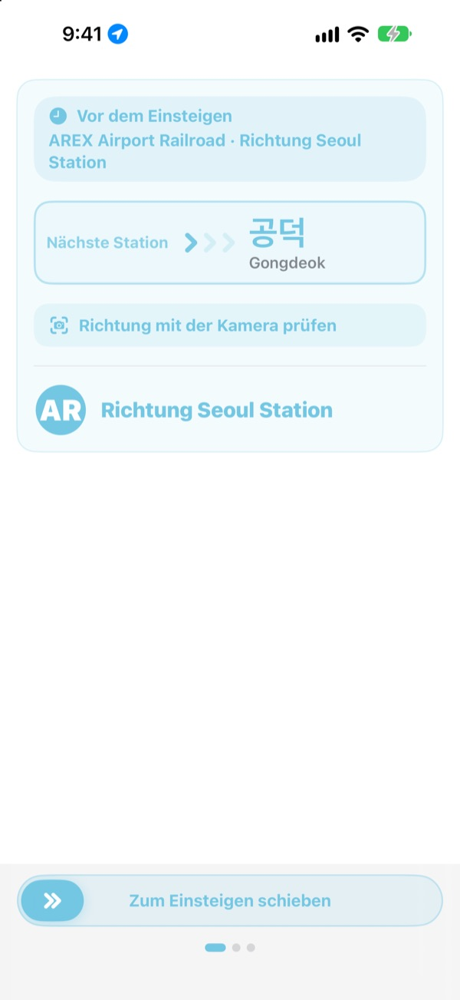
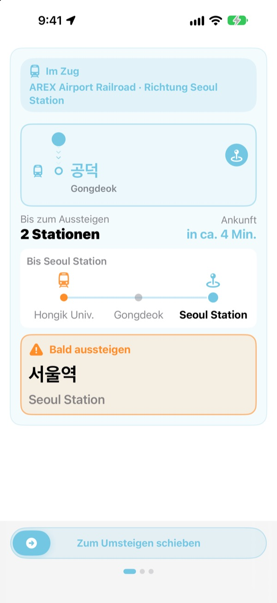
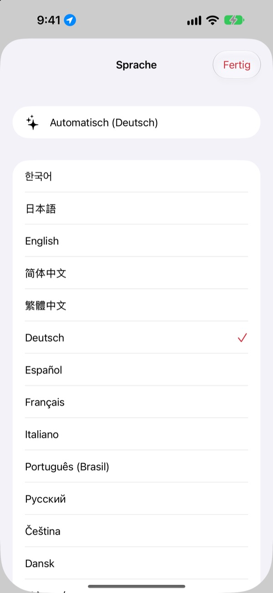

Richtiger Bahnsteig.
Richtige Station.
Wähle Start und Ziel, und KORA zeigt dir den richtigen Zug so, wie er auf dem Schild am Bahnsteig steht. Während der Fahrt verfolgt KORA deine Station und sagt dir, wann du aussteigen musst.
Routensuche, Fahrtrichtung und Echtzeit-Ankünfte sind kostenlos.

Probefahrt
Du stehst an der Station Hongik Univ. auf der AREX-Linie. Wähle dein Ziel und tippe auf „Los geht's“: Fahrtrichtung und Aussteige-Hinweise erscheinen wie in der App.
Schon mal am Bahnsteig gestanden und nicht gewusst, welcher Zug?
Karten-Apps zeigen dir die Linie, am Bahnsteig hängen aber nur Schilder mit Stationsnamen, die du noch nie gehört hast. Steigst du in die falsche Richtung, fährst du mehrere Stationen zurück. Verpasst du die Ansage, fährst du an deinem Ziel vorbei. KORA nennt deinen Zug so, wie er auf dem Schild steht, und warnt dich vor deiner Station.
So, wie es auf dem Schild steht
Der richtige Zug wird genau so angezeigt, wie sein Ziel am Bahnsteig und am Zug steht. Unsicher? Richte die Kamera auf das Bahnsteigschild oder die Zielanzeige des Zugs, und KORA sagt dir sofort, ob die Richtung stimmt.
Die Texterkennung läuft komplett auf deinem iPhone.

Nie wieder vorbeifahren
KORA kombiniert Echtzeit-Ankünfte, GPS, Anfahren und Halten des Zugs sowie die Ansagen im Zug, um zu wissen, wo du bist. Kurz vor deinem Ziel kommt „Bald aussteigen“, dann „Jetzt aussteigen!“, jeweils mit Vibration.
Den Fahrtfortschritt siehst du auch auf dem Sperrbildschirm und in der Dynamic Island.

23 Sprachen, koreanische Namen bleiben
Die ganze App gibt es in 23 Sprachen, sie startet in der Sprache deines iPhones. Stationsnamen stehen im koreanischen Original neben der lateinischen Schreibweise von den Schildern, so findest du sie am Bahnsteig sofort wieder.

In drei Schritten los
- 1
Start festlegen
GPS findet die nächste Station, oder du wählst selbst.
- 2
Ziel wählen
Umstiege, Stationen und der richtige Zug erscheinen sofort.
- 3
Auf „Los geht's“ tippen
Bildschirm und Vibration sagen dir, wann du aussteigen musst.
Wofür die Berechtigungen sind
- Standort
- Die nächste Station finden
- Kamera
- Bahnsteigschilder und Zielanzeigen lesen, um die Richtung zu prüfen
- Mikrofon und Spracherkennung
- Stationsnamen und Ausstiegsseite aus den Ansagen im Zug heraushören
- Bewegung & Fitness
- Anfahren und Halten erkennen, damit die aktuelle Station genauer stimmt
Alle Berechtigungen sind freiwillig. Ohne sie wählst du Stationen einfach selbst und bekommst trotzdem Route und Aussteige-Hinweise. Standort, Kamera und Ansagen werden nur auf deinem Gerät verarbeitet und nie aufgenommen, gespeichert oder gesendet.
Wegfinden ist immer gratis. Fahrtbegleitung gibt es mit KORA Pro.
Gratis
- Routensuche und Umstiege
- Das Zielschild des richtigen Zugs
- Echtzeit-Ankünfte
- Richtungscheck mit der Kamera
- Aktuelle Station und Aussteige-Hinweis auf dem Bildschirm
- Alle Pro-Funktionen auf deinen ersten drei Fahrten
KORA Pro
- Auf jeder Fahrt: Hinweise auf dem Sperrbildschirm, Erkennung der Ansagen und Vibration beim Aussteigen
- Ausgänge: was an jedem Ausgang der Seouler Linien 1 bis 8 liegt
- Letzte-Bahn-Hinweis für die Linien 1 bis 9
- Gepäckmodus: der Wagen am nächsten zum Aufzug auf den Linien 1 bis 8
Einmal kaufen, für immer behalten. Kein Abo.
Sind die Gratisfahrten aufgebraucht, kannst du trotzdem weiterfahren. Die Anzeige im Bildschirm bleibt, nur Sperrbildschirm, Ansagenerkennung und Vibration pausieren.
Häufige Fragen
Die App findet meine Station nicht oder zeigt die falsche.
Öffne Einstellungen > Datenschutz & Sicherheit > Ortungsdienste > KORA, wähle „Beim Verwenden der App“ und aktiviere „Genauer Standort“. Unter der Erde oder in großen Gebäuden ist GPS oft ungenau. Tippe dann oben auf die Karte der aktuellen Station und wähle sie selbst. Alles funktioniert auch ohne Standortzugriff.
Wie funktioniert der Richtungscheck mit der Kamera?
Sobald die Route angezeigt wird, öffne den Kamera-Richtungscheck und fülle das Bild mit dem Bahnsteigschild oder der Zielanzeige des Zugs. Am besten klappt es mit der koreanischen Schrift. Ist das Schild dunkel, weit weg oder sehr schräg, geh etwas näher heran und halte gerade drauf. Das Ergebnis ist eine Hilfe, im Zweifel schau auch auf die Schilder in der Station.
Echtzeit-Ankünfte werden nicht angezeigt.
Die Echtzeitdaten kommen vom Seoul Open Data Plaza, brauchen Internet und gibt es vor allem für Linien im Großraum Seoul. Ohne Verbindung oder Echtzeitdaten schätzt KORA die Position automatisch anhand des Fahrplans, GPS und des Beschleunigungssensors und führt dich weiter. Die Routensuche klappt auch offline.
Der Aussteige-Hinweis kam etwas zu früh oder zu spät.
Unter der Erde ist GPS schwach, deshalb kann die aktuelle Station hinterherhinken. Erlaubst du das Mikrofon, korrigiert KORA die Position anhand der Ansagen im Zug. Die Hinweise sind eine Hilfe, hör also auch auf die Ansagen und achte auf die Stationsschilder.
Wie ändere ich die Sprache?
KORA startet in der Sprache deines iPhones. Halte auf dem Hauptbildschirm eine Stationskarte (aktuelle Station oder Ziel) gedrückt, dann öffnet sich die Sprachauswahl mit 23 Sprachen.
Die Live-Aktivität erscheint nicht auf dem Sperrbildschirm.
Prüfe unter Einstellungen > Apps > KORA (bei älterem iOS Einstellungen > KORA), ob Live-Aktivitäten eingeschaltet sind. Sie erscheint, sobald du die Fahrtbegleitung startest, und endet, wenn du die App ganz schließt. Die Dynamic Island gibt es nur auf iPhone-Modellen, die sie haben.
Welche Städte sind dabei?
Rund 930 Stationen im Großraum Seoul (Seoul, Gyeonggi und Incheon, inklusive GTX-A, AREX, Shinbundang-Linie und Stadtbahnen), in Busan, Daegu, Gwangju und Daejeon. Die Stadt wechselst du mit den Regions-Chips oben in der Stationsauswahl.
Kann ich die App schon vor der Reise ausprobieren?
Ja. Wähle Start und Ziel selbst, dann siehst du Routen, Umstiege und Fahrtrichtung von überall auf der Welt.
Ist KORA Pro ein Abo?
Nein. Du kaufst es einmal und behältst es, auch mit der Familienfreigabe. Nach einer Neuinstallation tippst du im Pro-Bildschirm auf „Kauf wiederherstellen“.
Was passiert mit meinen Daten?
Kein Konto, keine Werbung. Standort, Kamera und Ansagenerkennung werden auf deinem Gerät verarbeitet und nie gespeichert oder gesendet. Wir erfassen nur anonyme Nutzungsstatistiken, um die App zu verbessern.
Ist die App barrierefrei?
KORA unterstützt VoiceOver und größere Schrift. Vorschläge für mehr Barrierefreiheit sind jederzeit willkommen.
Station fehlt, Name falsch oder eine andere Frage? Schreib an mizzking75@gmail.com. Mit App-Version, iPhone-Modell und den genutzten Stationen können wir schneller helfen.